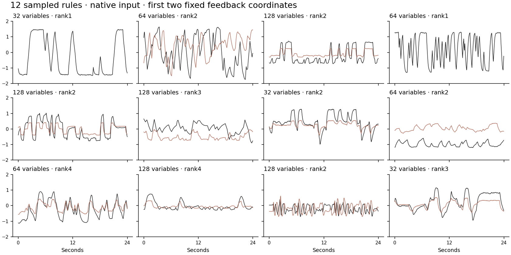

Simple rule, diverse dynamics
V6 · Sample the network and inputs. Let one recurrent equation evolve.
32.000 s
Loading…
V6 · sampled rule
V5 reference · independent world
Outside input
Network response
Spatial amplitude driver
Observed input · voltage → STFT
Contact time series
One rule. What varies?
τ dx/dt = −x + (gJ + QAQᵀ) tanh(x) + u(t)
Activity fades, receives saturating feedback from the network, and receives outside input. Connections and input statistics are sampled once per recording. The trajectory unfolds from that rule; it is not drawn by hand.
| Parameter | V5 | V6 |
|---|
| Internal variables | 64 | 32 / 64 / 128 |
| Feedback blocks | One chosen construction | One or two sampled blocks; rank 1–4 |
| Random feedback gain | 0.3 | 0.15–0.6 |
| Block strength | Fixed | 0.8–1.2× |
| Input strength | Gaussian SD 0.8 | Per-pattern RMS 0.4–1.2 |
| Input timing | 0.12–0.65 s dwell | Same law × 0.5–2 |
| Input aligned with feedback | Incidental | 0–60% of pattern energy |
Network timescale remains sampled from 0.06–0.3 s. Renderer, grid sampler, frequency bins and normalization remain unchanged. These are engineering ranges, not measured biological distributions. Block names describe connections, not guaranteed behaviors.
Checks and limits

Spatial colors use fixed ±3 limits. The spatial driver includes the renderer’s existing local activity. Input alignment is normalized per variable so changing network size does not automatically increase input RMS. No new renderer gain or smoothing was added.
Mastrogiuseppe & Ostojic (2018) motivates random plus structured recurrent connections. Our particular blocks and sampling ranges are not a fitted cortical model.
Pretraining handoff
Verified handoff prepared separately for the training owner.
Includes the generator, pinned recipe, existing-renderer commands, collector and actual MAPA packet checks. Native3 and V5 are preserved. The training owner still selects this dataset at the existing MAPA input boundary. No training or automatic real/synthetic mixture is configured.